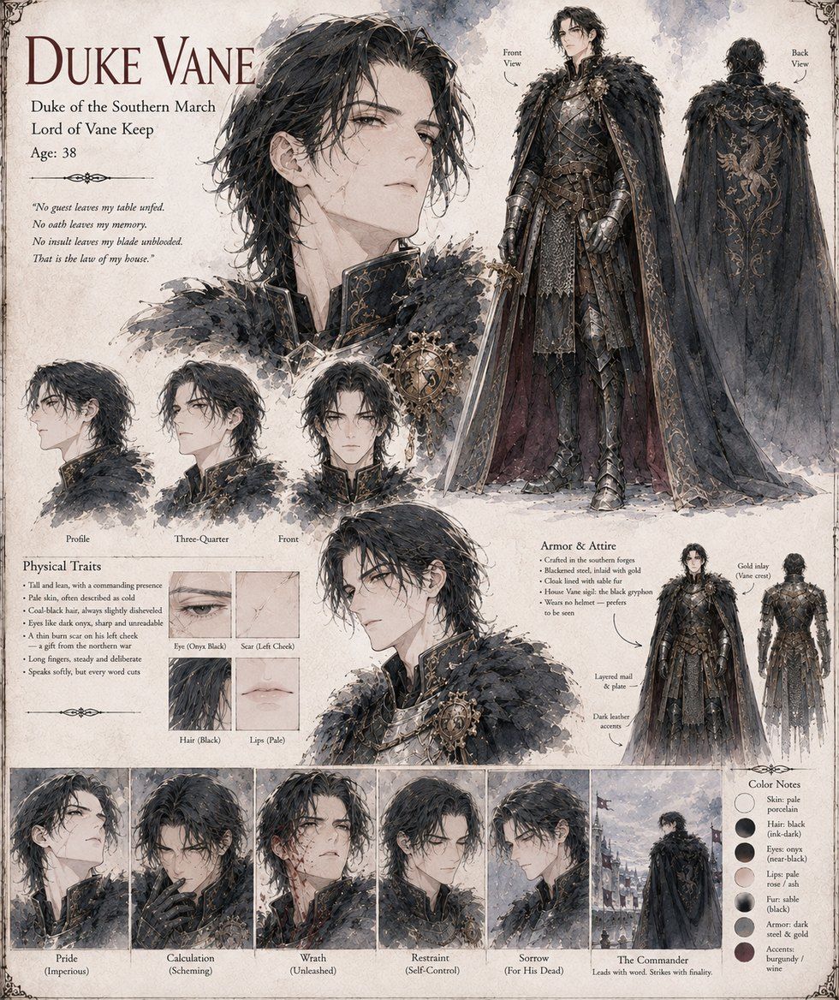

Duke Vane
Duke of the Southern March · Lord of Vane Keep
Duke of the Southern March: patient, gracious, and never once unpriced. It is Vane who wounds Duke Maros with a summer-killed stag's head presented as a gift at his own table, who joins the royal hunt to watch what follows, and who — when the flask kills Kaelen — sees not a tragedy but a relic, and through it a Regency. He sells a desperate Maros his rescue at ruinous terms, hires Soren to steal the vessel, has Maros arrested when he becomes a liability, and, when he finally pries the silver off himself in the small hours before his last council, finds only a dented steel flask that smells of old soup — and tells no one. Yvaine finds him in the hall of Maros's captured keep; his head is left on a pike before the drawbridge. (Not the same man as Vane the Wanderer of The Iron Stiletto War.)
“No guest leaves my table unfed. No oath leaves my memory. No insult leaves my blade unblooded. That is the law of my house.”
Appears in The Thermal Vessel War